Prerequisites and Setup
Before getting started, you must install Visual Studio Code (commonly referred to as VS Code) on your local machine. VS Code is a code editor built on open source technology, free to use, and published by Microsoft. Distributions are available for every major operating system, including Windows and macOS.
Download: https://code.visualstudio.com
Select the latest "stable" release availabe for your machine's operating system.
Follow along with the installer wizard steps and continue after VS Code is successfully running on your local machine.
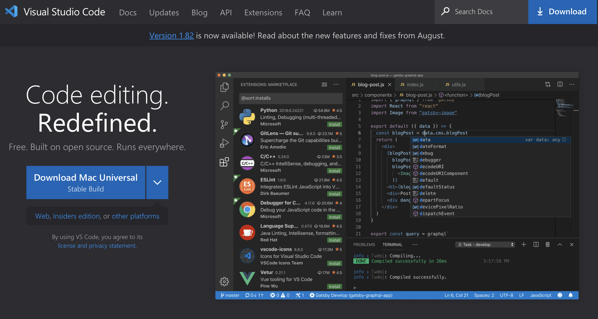
-
Open the VS Code app and locate the sidebar along the left-side of the interface. Click the Extensions icon as shown to open the marketplace of Microsoft services and open source technologies that can be integrated with VS Code.
-
At the top of the Extensions panel is a search bar. Search here for
Ansible. -
Locate from the results the
Ansibleservice published byRed Hat. Click the blue Install icon located to the right.
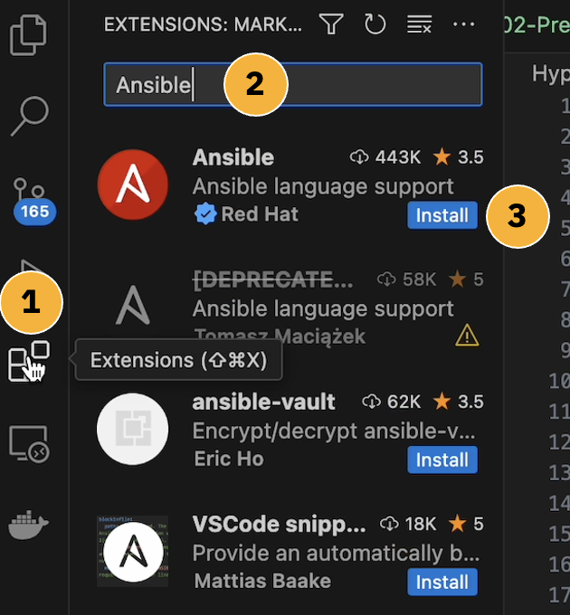
DEPRECATED VERSION
You may ignore the deprecated version of "Ansible language support" that was previously published by Tomasz Maciazek. The only official (and installable) Ansible extension is the one published by Red Hat's verified account.
Installation of the Ansible extension for VS Code should only take a moment. When it's ready, clear the search bar filter and look for Ansible under the "Installed" services under the Extensions panel.
-
Click the mechanical "cog" icon (as shown), located on the right side of the Ansible service tile.
-
From the dropdown list of options, click Extension Settings.
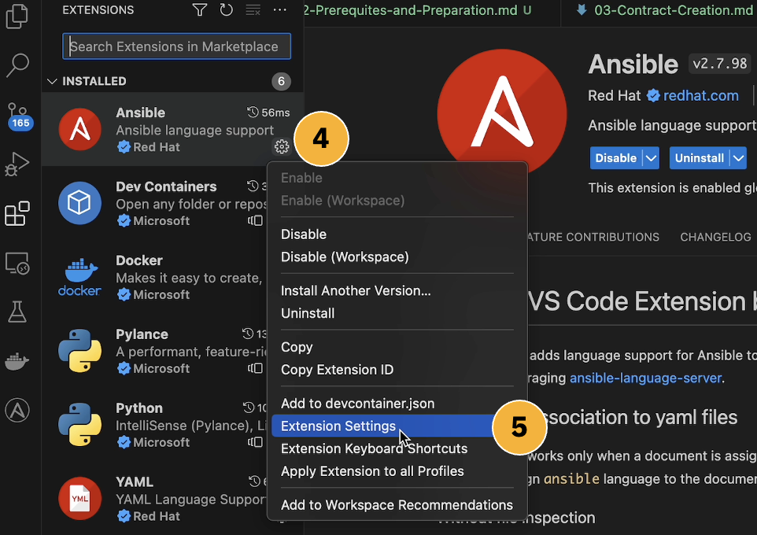
- A settings panel for the Ansible extension will fill the screen. From the top-left corner of the interface, look for a switch to toggle between
UserandWorkspace. Select the Workspace option.
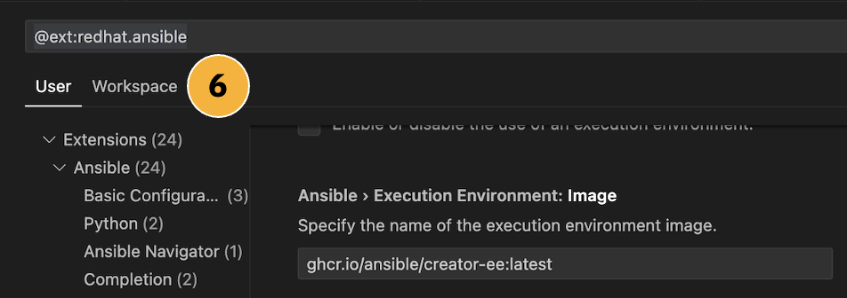
- Scroll down the list of settings until you locate the fields
Ansible > LightspeedandAnsible > Lightspeed > Suggestions. By default, these will be disabled. Click the checkmark icons to the left of BOTH entries to ENABLE IBM watsonx Code Assistant for Red Hat Ansible Lightspeed Tech Preview features within the VS Code environment.
The settings will automatically be applied without needing to confirm or "save" manually. Close the Settings tab using the X icon along the top of the taskbar to proceed.
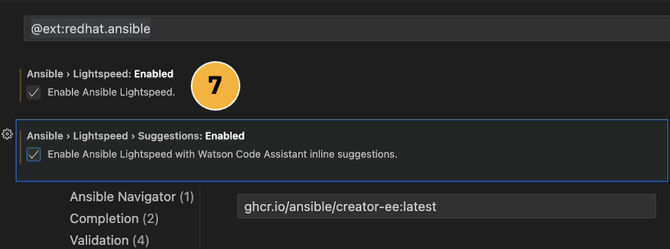
- Next, you will need to register for an account with GitHub. If you already have an account registered with GitHub, you may skip ahead to Step 9.
Register: https://github.com
GitHub, Inc. is a platform and cloud-based service for software development and version control using Git, allowing developers to store and manage their code. Like VS Code, it is also owned by Microsoft Corporation.
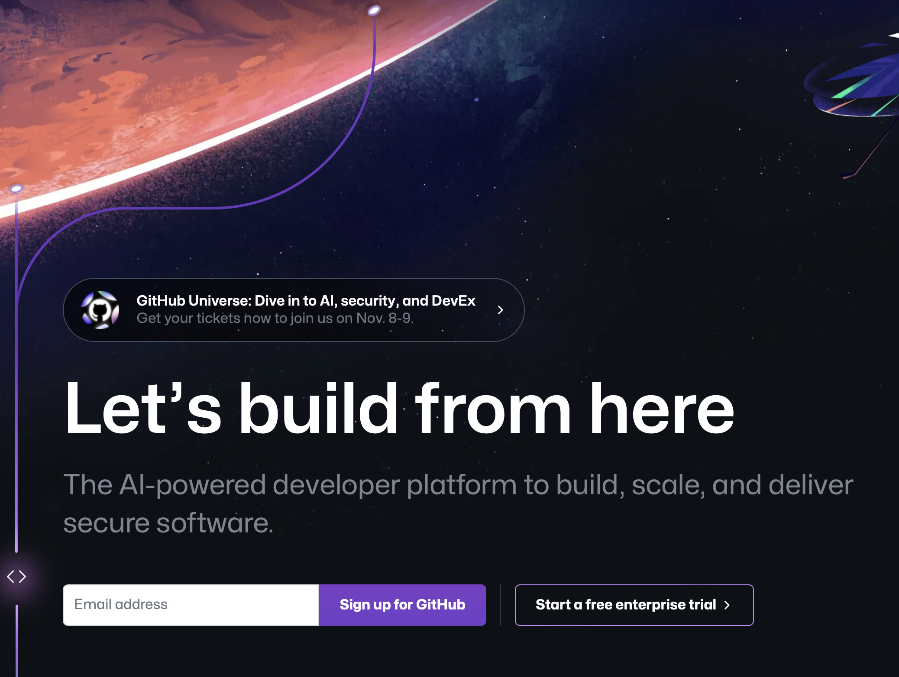
With a registered GitHub account, you are now ready to add the GitHub extension for VS Code to your local machine. This will follow a very similar process to what you performed for installing Ansible.
-
Select the Extensions tab from the left-side of the VS Code interface and search for
GitHub Pull Requests. -
Click the Install icon to add the Extension to your VS Code environment. Integration with VS Code should only take a moment to complete.
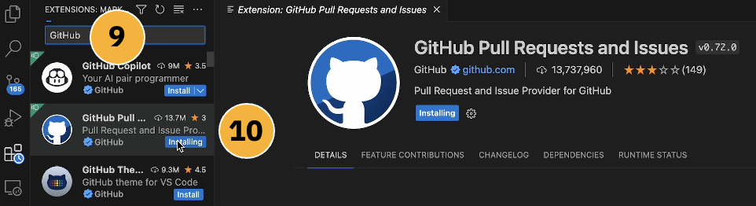
- With the GitHub extension now available within VS Code, you must authorize and link the service to your personal GitHub account. Notice that in the left-hand interface of the VS Code environment, there are now icons (further down from the Extensions tab) for
AnsibleandGitHub.
Click the GitHub tab. In the top-left of the interface, locate and click the blue Sign In button (as shown below).
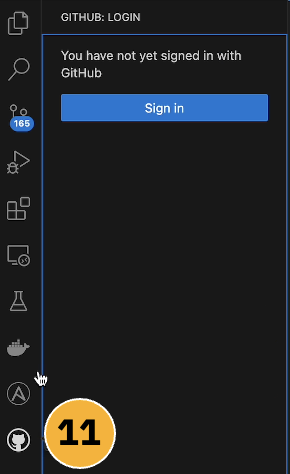
- A web browser tab will open, directing you to log in to GitHub using the personal account you registered in Step 8.
After authenticating, you will be asked to Authorize Visual-Studio-Code for access to your GitHub account. Do so by clicking the green icon and accepting any prompts.
VS Code will ask "Allow an extension to open this URI?" to which you should select Open (and toggle "Don't ask again for this extension" if you would rather not see future prompts).
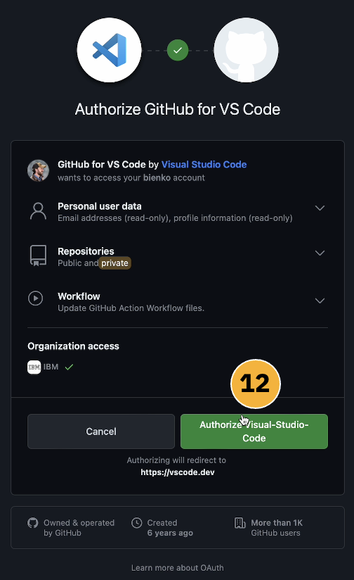
Once connected to your personal GitHub account, the left side of the VS Code interface will populate with any published code repositories ("repos") that are already associated with the account. If you have only registered with GitHub for this lab, this section may appear as empty.
To begin experimenting with IBM watsonx Code Assistant for Red Hat Ansible Lightspeed's generative AI capabilities, we first need access to some Ansible Playbooks to generate Tasks with. Playbooks have already been prepared ahead of time for the Ansible Lightspeed Tech Preview, which we will make use of here.
- A "pull" request in GitHub is essentially a request to replicate code from the cloud-hosted repository into the local (VS Code and local machine) environment. To perform a pull request with VS Code, do either of the following actions (depending on your operating system):
-
Windows: With the GitHub Extension tab open in VS Code, press
CTRL+Shift+Pto open an executable console at the top of VS Code. -
macOS: With the GitHub Extension tab open in VS Code, press
COMMAND+Shift+Pto open an executable console at the top of VS Code.
The remainder of the instructions are the same for all operating systems.
Enter into the terminal prompt the following instruction:
On your keyboard, hit Return/Enter to confirm.
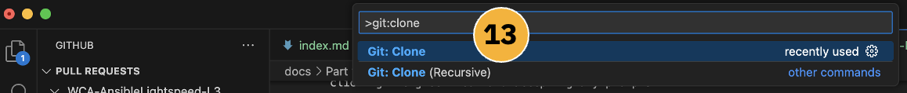
- Now you must specify the public repository from which to clone the data. Copy and paste the following URL into the terminal prompt:
Pull Request URL:
On your keyboard, hit Return/Enter to confirm.
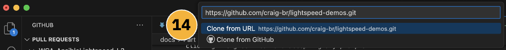
-
You will be asked to select (using your local machine's file browser) the destination for where the cloned data will be saved locally. Select a directory (Documents, Desktop, or your preference) and then confirm by clicking Select as Repository Destination to kick off the replication from GitHub to your local machine.
-
A prompt will appear asking
Would you like to open the cloned repository, or add it to the current workspace?to which you should click Open. -
You will be asked
Do you trust the authors of the files in this folder?to which you should click Yes, I trust the authors. -
The replication of Ansible Playbooks to your local machine from GitHub is now complete. You can inspect the contents of the repository using the Explorer tab (the first icon in the left-hand navigator), as shown in the following screenshot.
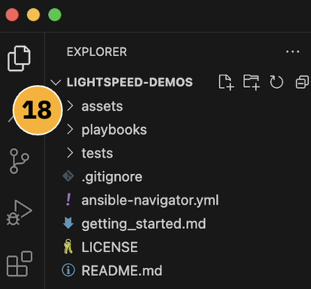
LOCAL REPLICAS
The replicated/cloned GitHub files are a local replica, meaning that you may safely edit and change the contents of this folder on your local machine without any impact to the master copy on GitHub. Have fun and experiment!
Next, you'll need to activate your Ansible Lightspeed Tech Preview for the Ansible extension inside VS Code. This will follow a similar process to how you previously authorized the GitHub extension.
-
Click the Ansible icon from the left-hand interface of the VS Code environment (look for the large "A" icon).
-
A panel will open displaying details about
Ansible Lightspeed Login. Click the blue Connect button to launch the authorization tool.
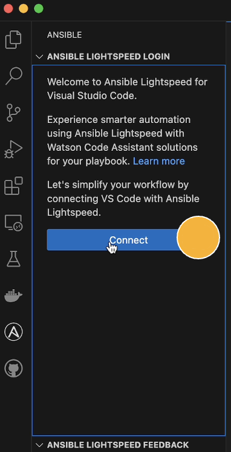
-
A prompt will appear stating that
The extension Ansible wants to sign in using Ansible Lightspeedto which you should click Allow. You will then be asked about opening an external website, to which you should reply Open. -
Your web browser will then load to a page asking you to login in using either Red Hat or GitHub. Click the Log in with GitHub option.
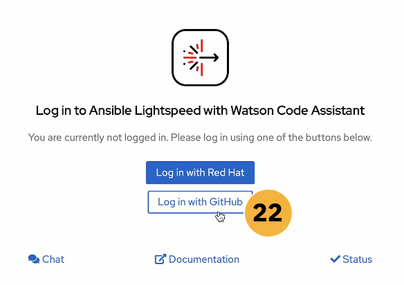
OUTDATED PRODUCT NAMES
The branding displayed on this page is an outdated name for the offering before reaching General Availability (GA) status. The correct name is IBM watsonx Code Assistant for Red Hat Ansible Lightspeed.
- Supply your GitHub account name and password (Step 8). If you have already authenticated using the GitHub extension for VS Code, it may bypass that require entirely. After logging in, you will be asked to
Authorize Ansible Lightspeed for VS Codeto which you should click Authorize.
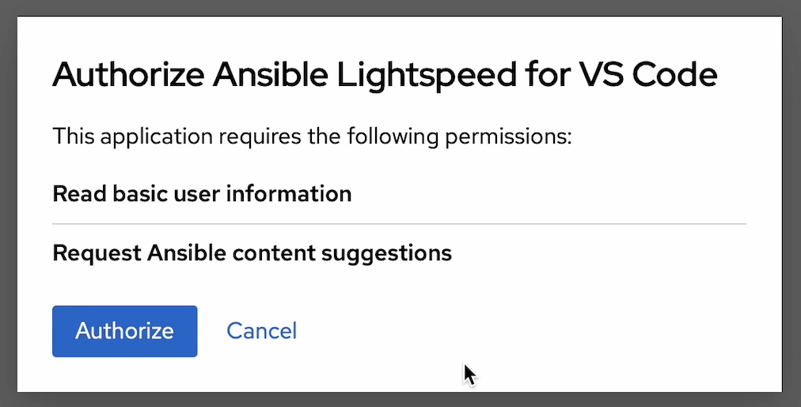
-
A prompt will attempt inside VS Code asking
Allow an extension to open this URI?to which you should click Open. -
In the bottom-right corner of the VS Code environment, a pop-up will appear with a
Welcome backmessage. Just below this message, along the very bottom-right hand corner of the VS Code environment, a tile labelledAnsiblewill also have appeared. This indicates that Ansible (and Ansible Lightspeed) are now activated for this particular workspace.
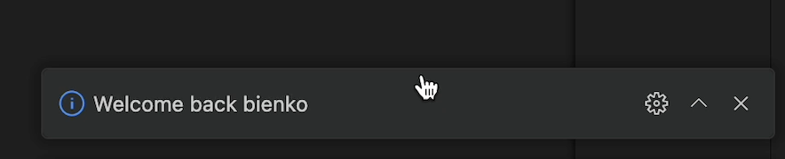
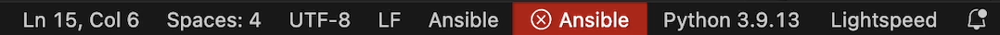
PYTHON
The VS Code environment also requires that Python 3.9.13 (or higher) be activated as part of the workspace. Look for a Python tile adjacent to the Ansible tile along the bottom-right corner of the VS Code interface. If it is not set, click the tile and select Python 3.9.13 (or higher).
Well done. Your VS Code environment is now fully configured and ready for experimentation using generative AI techniques. In the following section, we will review the evaluation criteria for how IBM technical sellers and business partners receive accreditation for completing the Level 3 material.